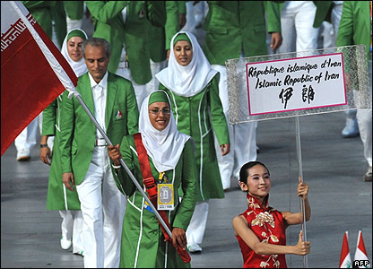

پذيرش > مقالات > خارج از چارچوب > هما بر دوشش اما پرچمی از نابرابری
 در حاشیه افتتاحیه المپیک چین در حاشیه افتتاحیه المپیک چین

 هما بر دوشش اما پرچمی از نابرابری هما بر دوشش اما پرچمی از نابرابری
21 مرداد 1387 - عفت ماهباز - نسخه قابل چاپ
تغییر برای برابری:مراسم افتتاحیه بیست و نهمین دوره بازیهای المپیک در پکن با نمایشی عظیم از رقص، موسیقی و آتش بازی در استادیوم ملی چین با شعار "یک دنیا، یک رویا"،در حالی افتتاح شد که حدود یک میلیارد نفر در سراسر جهان ناظرآن بودند. روزانه تقریبا 21 هزار و پانصد خبرنگار، گزارشگر ،خبرهای آن را به دنیا منعکس خواهند نمود.
با خوشحالی و دلواپسی همزمان در کنار یک میلیارد انسان دیگر به تماشا نشستم . منتظر کاروان ورزشی ایران شدم . آیا این بارمنتظر چیز ویژه تری از کاروان ایران بودم آیا منتظر آن بودم پرچمدار ما هم زنی باشد همچون زنان دیگر کشورها ؟ آیا به دنبال معجزه ایی از این دست می گشتم؟ اما کاروان ورزشی ایران با تعدای همانند سال های آغازین شرکت ایران در المپیک1، با 54 ورزشکار با ترکیب زیبایی از رنگ سبز و سفید بر صفحات تلویزیون ظاهر شدند. پرچمدار کاروان ایران در این مراسم چهارساعته بازیهای المپیک بر عهده هما حسینی، اولین قایقران زن 19 ساله ایرانی بود در کنار او دو ورزشکار زن ایرانی دیگر ساراخوش جمال فکری در تکواندو، نجمه آبتین در تیراندازی راه می سپردند.
پرچمدار، زنی است با چشمانی خندان و لبخندی گشوده! ایا این زن می تواند نماینده حکومتی باشد که او(زن) را با مردانی که همراه و همتراز اویند برابر نمی داند و برایش در همه جا قیم قایل است و تا جایی پیش می رود که در ماه گذشته كميسيون حقوقي و قضائي مجلس هشتم، (باوجود اعتراضات متمادی فعالین جنبش زنان و حقوق بشردر ایران)، كليات لايحه ایی را به تصويب رساند که هر مرد به راحتی بتواند 4 زن عقدی رسمی داشته باشد 2
اما لبخند و گفتارهما حسینی، حکایت از نسل دخترانی دارد که نابرابری را تحمل نخواهد کرد اورا همچون صدها دختر جوانی در ایران دیدم به دنبال یک میلیون امضا می گردند تا بگویند که با مردان برابرند اورا همچون ده ها دختر جوانی دیدم که پشت استادیم آزادی، برای آزادی ورود به استادیوم های ورزشی فوتبال که تنها مردان جای دارند می کوشند. اورا کنار دخترانی دیدم که برای قانون بی سنگسار می جنگند.
درالمپیک پکن
هما دختری
ازتبار جنبش یک میلیون امضا،
برابری است؟!
بر لبانش لبخندی است
بر دوشش اما
پرچمی از نابرابری
چهارسال پیش نیزلیدا فریمان در رشته تیراندازی حمل پرچم کاروان ایران در المپیک آتلانتا را برعهده داشت.در آن زمان او با سهمیه (وایت کارد) و بدون رکورد ورودی به مسابقات المپیک راه یافته بود. اماهما حسینی دختری از کرمانشاه، پس از موفقیتش در رشته رویینگ توانست به مسابقات المپیک راه پیدا کند او پس از این پیروزی به خبرگزاری ها گفت:
«قطعاً حمل پرچم مسئولیت سختی است. ورزشکاری که وظیفه حمل پرچم را برعهده دارد حاوی پیامهای با ارزشی از کشورش است، من نیز با این کار پیام برابری حقوق زنان ورزشکار ایران را به گوش ورزشکاران تمام دنیا میرسانم.»
در جایی دیگراو می گوید: " برای خود من شاید داشتن حجاب یکی از عوامل تحریککننده بود که بیشتر کار کنم و این را به همهی قایقران ها، تمام آسیاییها و تمام جهانیها ثابت کنم که ما نسبتا شرایطمان خاص است، که چنین مسایلی نمیتواند مانع کارکردن ما باشد و ما میتوانیم حتا قویتر از آنها هم ظاهر بشویم." 3
اگر چه با شرایط و امکاناتی که ورزشکاران ما به ویژه زنان در ایران دارند، آنها نخواهند توانست به عنوان برنده از گروه خود صعود کنندو به مدالی دست یابند اما تلاش آنها برای گشودن دریچه ها و رسیدن به این مکان جای قدردانی بسیار دارد.
زیرنویس
1- اولین باربازيها المپيک در سال 1896 در آتن برگزار شد. ايران تا سال 1936 در بازيها شرکت نکرد. کيمته ملی المپيک در سال 1326 تاسيس شد. همان سال به عضويت کميته بين المللی المپيک در آمد. در آن سال با موافقت رضا شاه، ايران وارد بازيهای المپيک شد آن هم با گروهی از دانشجويان ايرانی که برای تحصيل به فرانسه، ايتاليا، بريتانيا، آلمان و اتريش رفته بودند. آنها لباسی متحد الشکل تهيه کرده و در گروه 19 نفری پا به دهکده المپيک نهادند. کاروان ورزشی ايران با 52 نفر از ورزشکاران، مربيان، سرپرستان و غيره عازم لندن شدند. بودجه اردو و سفر و اقامت را شاه و مجلس شورای ملی پرداختند.قبل و بعد از انقلاب، به مدت 12 سال ايران از المپيک دور بود. يعنی يک نسل از ورزشکاران ايرانی از رقابت در اين بازي ها محروم شدند.
2 - لایحه «حمایت از خانواده» بنا به پيشنهاد قوه قضاييه در روز سوم تیرماه 1386 در هیات وزیران به تصویب رسید. در روز اول مرداد 1386 به مجلس هفتم ارائه شد. كميسيون حقوقي و قضائي مجلس هشتم در دومين ماه كاري خود، كليات لايحه حمايت از خانواده را بدون هيچ تغييري به تصويب رساند. طبق ماده 23 لايحه حمايت از خانواده، مردان فقط به شرط دارا بودن تمکن مالي حق ازدواج هاي مجدد دارند و شرط موافقت همسر اول که تا پيش از اين در قانون وجود داشت، حذف شده است. ماده 23- اختيار همسر دائم بعدي، منوط به اجازه دادگاه پس از احراز توانايي مالي مرد و تعهد اجراء عدالت بين همسران مي باشد.
در 1353 مجلس لایحه ای را در زمینه اصلاح قانون حمایت خانواده مصوب 1346 مطرح کرد و در نهایت متممی بر قانون حمایت خانواده نوشته شد. این متمم دارای 28 ماده بود. در این قانون سن ازدواج برای مردان به 20 سال و برای زنان به 18 سال افزایش یافت. اما در مورد ازدواج زنان بین 15 تا 18 سال مقرر شده بود که دادگاه های خانواده در خواست های ازدواج در این سنین را بررسی کنند. در متمم این قانون موافقت دادگاه در مورد ازدواج مجدد مرد به توافق زن اول، عدم رضایت او در مورد روابط جنسی با همسر اول، بیماری ذهنی و عقیم بودن یا عدم حضور زن مشروط بود (مهرانگیز کار، ساختار حقوق نظام خانواده در ایران، روشنگران، تهران، 1378)
3 - به خبرگزاری مهر،و گزارش فرانس پرس ۲۷ تیر ماه ۱۳۸۷
efatmahbas@hotmail.com
ارسال به
بالاترین
،
توییتر
،
فریندفید
،
فیسبوک
در همين بخش :
 8 مارس روزی که نمی توان از ما دریغ کرد 8 مارس روزی که نمی توان از ما دریغ کرد
با طلاق توافقی از حقارت و کتک و فحش رها شدم /گزارشی از دادگاه محلاتی: مریم مالک
تجمع مادران عزادار در رشت
تغییر ممکن است/ جلوه جواهری(26 روز پس از بازداشت کاوه مظفری)
گامهایی که با تزلزل نا آشنایند/ گرامی داشت چهلم ندا در رشت
ديگر بخش ها :
طرح یک میلیون امضا
|
مقالات
|
سایت نوشته ها
|
اخبار
|
گزارش كمپين
|
گفت و گو
|
علیه سکوت
|
كوچه به كوچه
|
نامه های شما
|
گزارش ویژه
|
گفتگو با اعضا
|
ویژه سالگرد کمپین
|
تصویر برابری
|
دل آرام علی
|
تریبون
|
مقالات
|
تاریخ شفاهی
|
خارج از چارچوب
|
کتابخانه
|
درباره کمپین
|
کمپین در شهرها
|
کمپین در بند
|
صدای تغییر
|
ویژه 22 خرداد
|
لایحه حمایت از خانواده
|
گالری
|
عشا مومنی
|
امیر یعقوبعلی
|
خدیجه مقدم
|
راحله عسگری زاده و نسیم خسروی
|
پروین اردلان،جلوه جواهری، مریم حسین خواه، ناهید کشاورز
|
زینب پیغمبرزاده
|
سعیده امین، سارا ایمانیان، محبوبه حسین زاده، ناهید کشاورز و همایون نامی
|
احترام شادفر
|
نسیم سرابندی زاده،فاطمه دهدشتی
|
وبلاگ مهمان
|
پرونده خرم آباد
|
دستگیری ها
|
مریم مالک
|
پرستو اللهیاری
|
مهرنوش اعتمادی
|
سمیه رشیدی
|
Other Languages
|
همراهان
|
«فراخوان کمپین ده روز با بهاره هدایت»
| English
|